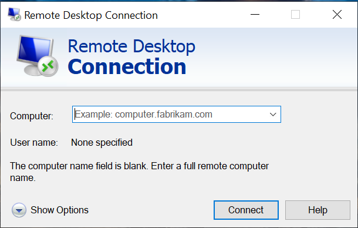
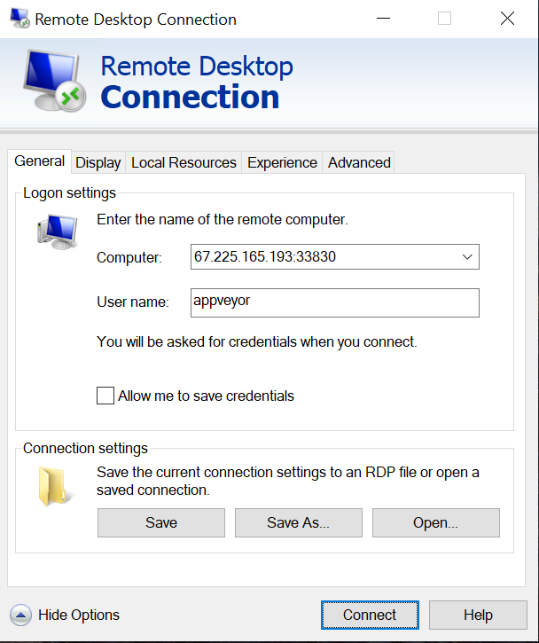
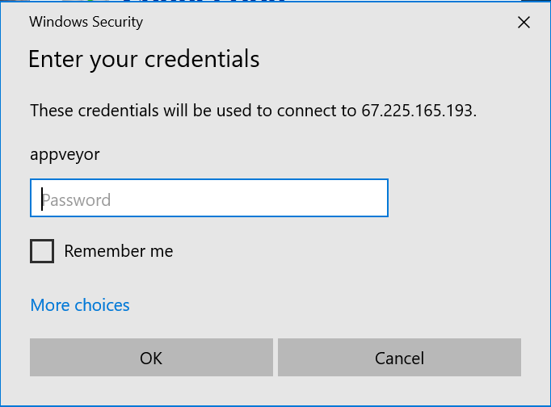
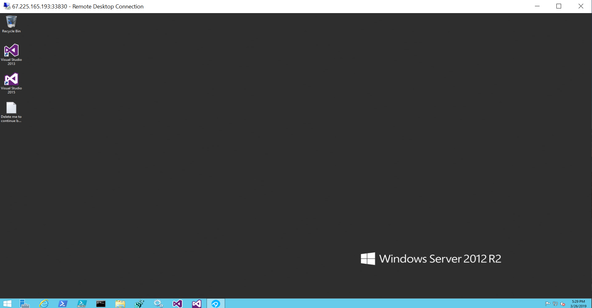
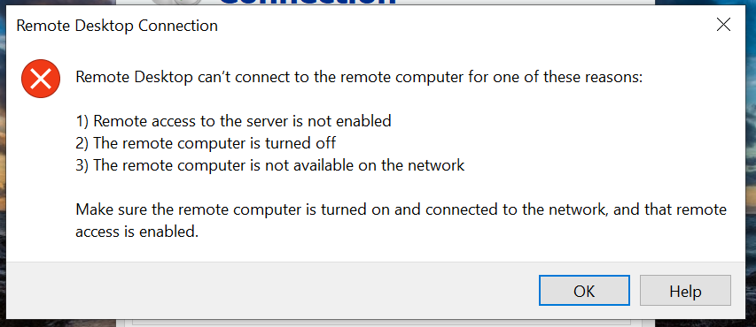

Table of Contents
The continuous integration service AppVeyor is great for regularly testing your software on Windows, and it is well-supported for R package developers via the r-appveyor project. Run usethis::use_appveyor() to add Windows testing to your R package.
Even though I have access to a local Windows machine, there have still been times when I couldn’t replicate an AppVeyor error. The cause of hard-to-replicate bugs could be due to differences in the installed software versions (e.g. pandoc, which was the source of my most recent AppVeyor bug) or differences between the desktop and server versions of Windows. The good news is that it is possible to interactively debug an AppVeyor build using Remote Desktop1 In this post, I provide step-by-step instructions on how to setup and debug your R package build on AppVeyor using Remote Desktop.
Install Remote Desktop
Windows: If you are using a Windows machine, you already have Remote Desktop installed. You can either type “Remote Desktop” into the search bar or navigate to Programs -> Windows Accessories -> Remote Desktop Connection.
macOS: Follow the instructions in Get started with Remote Desktop on Mac to install Microsoft Remote Desktop 10 from the Mac App Store. Note that this requires macOS 10.11 or later.
Linux: Use your distribution’s package manager to install Remmina, an open source implementation of Remote Desktop.
Configure to debug on failure
To have AppVeyor open a connection for you to login and debug your build, add the following line to the on_failure section of appveyor.yml:
ps: $blockRdp = $true; iex ((new-object net.webclient).DownloadString('https://raw.githubusercontent.com/appveyor/ci/master/scripts/enable-rdp.ps1'))If there is any error during the installation or checking of your R package, this line tells AppVeyor to pause the build and print the server details for you to connect and debug. If you’re using the default r-appveyor setup, your on_failure step will look like the following:
on_failure:
- 7z a failure.zip *.Rcheck\*
- appveyor PushArtifact failure.zip
- ps: $blockRdp = $true; iex ((new-object net.webclient).DownloadString('https://raw.githubusercontent.com/appveyor/ci/master/scripts/enable-rdp.ps1'))These commands zip the *.Rcheck/ directory, upload it as a build artifact for you to download, and then pause for debugging.
Set a password
Before you commit and push the update to appveyor.yml, it is highly recommended that you first set a password. If you don’t set a password, the default behavior is to print an automatically generated password to the build log. If you have any secrets that are used during your build (e.g. deploy SSH keys, access tokens, etc.), anyone that sees the build log would be able to access this information.2 Your secrets would be vulnerable every time your build failed for up to an hour (since that is the time limit for open source builds on AppVeyor).
To set a password using the AppVeyor user interface, click on your project, then go to Settings -> Environment -> Add variable. Name the environment variable APPVEYOR_RDP_PASSWORD. Make sure your password meets the strict minimal requirements that Windows Server enforces for all passwords (see the AppVeyor documentation).
Login to AppVeyor server via Remote Desktop
Once you push the update and your package build fails,3 AppVeyor will print the connection details in the build log. It should look something like the following:
$blockRdp = $true; iex ((new-object net.webclient).DownloadString('https://raw.githubusercontent.com/appveyor/ci/master/scripts/enable-rdp.ps1'))
Remote Desktop connection details:
Server: 67.225.165.193:33830
Username: appveyor
Build paused. To resume it, open a RDP session to delete 'Delete me to continue build.txt' file on Desktop.The server address will be different, but the username is always appveyor.
After you open Remote Desktop, click on “Show Options”:

Then enter your server address and appveyor for the username:

Next enter the password you had set as an environment variable:

You may get a warning about the server’s certificate, but you can safely ignore this and click on Yes to proceed:
If all goes well, you will now have access to the remote desktop!

To start debugging, click on the PowerShell icon  in the menu bar.
in the menu bar.
Navigating the file system with PowerShell
Microsoft’s PowerShell is quite different from a Unix shell. Fortunately, many of the commands for navigating the file system are similar.
pwdto print the current working directorycdto change directorylsto list files and directories
If you aren’t familiar with Windows filepaths, note that the root of the file system is the Windows drive (in this case C:), paths are separated with \, and the names are case-insensitive.
The session below navigates from the home directory (C:\Users\appveyor) to the cloned Git repository (debugAppveyor).
PS C:\Users\appveyor> pwd
Path
----
C:\Users\appveyor
PS C:\Users\appveyor> cd C:\projects\debugappveyor
PS C:\projects\debugappveyor> ls
Directory: C:\projects\debugappveyor
Mode LastWriteTime Length Name
---- ------------- ------ ----
d----- 4/2/2019 8:22 PM scripts
d----- 4/2/2019 8:22 PM tests
-a---- 4/2/2019 8:22 PM 40 .gitignore
-a---- 4/2/2019 8:22 PM 77 .Rbuildignore
-a---- 4/2/2019 8:22 PM 1158 appveyor.yml
-a---- 4/2/2019 8:22 PM 356 debugAppveyor.Rproj
-a---- 4/2/2019 8:22 PM 412 DESCRIPTION
-a---- 4/2/2019 8:22 PM 22 failure.zip
-a---- 4/2/2019 8:22 PM 31 NAMESPACE
-a---- 4/2/2019 8:22 PM 202 README.md
-a---- 4/2/2019 8:22 PM 32 travis-tool.sh.cmdSetup for R debugging
Unfortunately you cannot immediately start debugging. First you have to setup the necessary environment variables to be able to access the R executable and packages that were installed via the steps in appveyor.yml.
R is installed at C:\R. Add it to your path by running4:
$env:Path = "C:\R\bin;" + $env:PathYou should now be able to run R.exe to start the R console or Rscript.exe. If this isn’t working, run $env:Path to confirm that C:\R\bin was added to the beginning and ls C:\R\bin to confirm that R has been installed.
The R packages were installed in C:\Rlibrary. Set this as your R user library with:
$env:R_LIBS_USER = "C:\Rlibrary"And confirm that Rscript.exe -e ".libPaths()" returns [1] "C:/RLibrary" "C:/R/library".
Now you can start debugging! Run R.exe to open the R console.5 You can install R packages with install.packages() as you normally would. You can build and test the package using devtools functions (e.g. install(), build(), test() or check()) or using R.exe directly:
R.exe CMD build .
R.exe CMD check *tar.gz If you need to edit a file, I recommend using Notepad++, since this will preserve the line breaks and provide some basic syntax highlighting. You can either open it through the Windows start menu or alternatively open files from R using file.edit() after setting the R option with
options(editor = "C:/Program Files (x86)/Notepad++/notepad++.exe")Update: And if you need some more serious debugging tools, you can install RStudio (thanks to Jim Hester for the tip!). You can open Internet Explorer, download the latest version of RStudio Desktop for Windows at https://www.rstudio.com/products/rstudio/download, and run the installer.
And if you find yourself doing this often, you can automate this using the following PowerShell script:6
Invoke-WebRequest https://download1.rstudio.org/desktop/windows/RStudio-1.2.5033.exe -OutFile rstudio.exe
Start-Process -FilePath .\rstudio.exe -ArgumentList "/S /v/qn" -Wait
Start-Process 'C:\Program Files\RStudio\bin\rstudio.exe'I figured out how to install RStudio with PowerShell from this script from Tomaž Kaštrun. To learn more about automating installation steps with PowerShell, check out his blog post Installing R using Powershell.
Install system packages with Chocolatey
If you need to install different versions of non-R dependencies, you can use the package manager Chocolatey. Below is a quick primer to demonstrate how to install, list, and uninstall.
# Install latest version of pandoc
choco install pandoc
# View all available versions of pandoc
choco list pandoc --exact --all
# Install a previous version of pandoc
choco install pandoc --version 1.19.1 --allow-downgrade
# Uninstall pandoc
choco uninstall pandocTo quickly use the installed software, run refreshenv to update the environment variables. Unfortunately this only works for interactive use. If need the software to be available to your R package during the build, you need to manually add it to the path. For example, the configuration below installs pandoc 1.19.1 and adds it to the path.
before_test:
- ps: choco install pandoc --version 1.19.1 --allow-downgrade
- ps: $env:Path += ";C:\Program Files (x86)\Pandoc\"Debugging step-by-step
Instead of starting the debugger after a failure, you can also purposefully start the debugger earlier. This is useful if one of the setup steps is causing the failure. To start the debugger after the repository has been cloned but before any more setup has occurred, update the install step to include the debug line:
install:
- ps: $blockRdp = $true; iex ((new-object net.webclient).DownloadString('https://raw.githubusercontent.com/appveyor/ci/master/scripts/enable-rdp.ps1'))
- ps: BootstrapNow when you login, R is not even installed yet. To run each step individually, navigate to your directory in C:\projects, load the functions in appveyor-tool.ps1, and confirm the module was successfully loaded by running the Progress function, which prints the provided message along with the current date and time.
cd C:\projects\debugappveyor
Import-Module ..\appveyor-tool.ps1
Progress "Module successfully loaded"Next run Bootstrap to install R and download the travis-tool script. Then you can install the dependencies and run the tests using TravisTool.
Bootstrap
TravisTool install_deps
TravisTool run_testsResuming the build
To resume the build, you need to delete the file Delete me to continue build.txt. You can either delete it using the GUI interface or by running:
rm 'C:\Users\appveyor\Desktop\Delete me to continue build.txt'After it has been deleted, any remaining steps will be performed and then the connection will close.
Troubleshooting
Connection error: If you see a message like the following when you attempt to connect to the AppVeyor server, something is wrong on AppVeyor’s end. I recommend doing something else and returning to your debugging effort later. Even if you manage to log in, the connection can drop at any time if the service is experiencing problems.

Cached package error: If the error you are having is caused by a cached package that can’t be updated, you need to invalidate or delete the cache. The easiest method to invalidate the cache is to make it depend on a file. Changing the cache step below will invalidate the cache every time you change appveyor.yml.
cache:
- C:\RLibrary -> appveyor.ymlAlternatively, you can delete the cache manually in the JavaScript console via the AppVeyor API, but this is a much more involved process, so I recommend using the strategy above instead.
Conclusion
Interactively debugging an AppVeyor build is an involved process, but it may be the only way to finally determine the problem, especially if you can’t replicate the bug on your local Windows machine or if you don’t have easy access to one. For more information, see the official AppVeyor documentation on Accessing Windows build worker via Remote Desktop. And to practice debugging, check out my repository debugAppveyor. Happy debugging!
I’ll refer to this software as Remote Desktop throughout this post. It used to be called Remote Desktop Protocol, so the AppVeyor documentation refers to it as RDP. However, Microsoft now calls it Remote Desktop Connection.↩
This is similar to how interactive debugging works on Travis CI. Anyone that sees the build log can access the server. The main difference is that a debug build has to be manually triggered via the Travis API, so you at least know every time your secrets are vulnerable. See my previous post for details.↩
If you don’t currently have an R package that is failing on AppVeyor (lucky you!), you can try out the steps below by forking my repository debugAppveyor. It already has
appveyor.ymlsetup for debugging and a failing test, so you just have to activate AppVeyor for your forked repository, add a password, and then trigger a new build.↩The easiest method to paste into the PowerShell terminal is to right click. Alternatively, you can click on the icon in the top left of the window to open the menu, and then select Edit -> Paste↩
Entering only
Rwill re-execute the most recent command.↩This will always install version 1.2.5033, so you may want to update this. Unfortunately it is non-trivial to determine the download URL of the latest RStudio release.↩